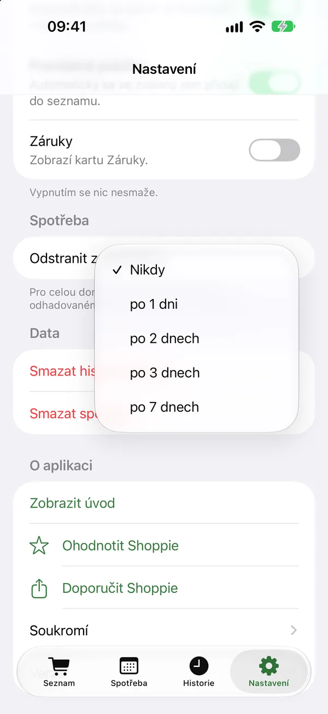
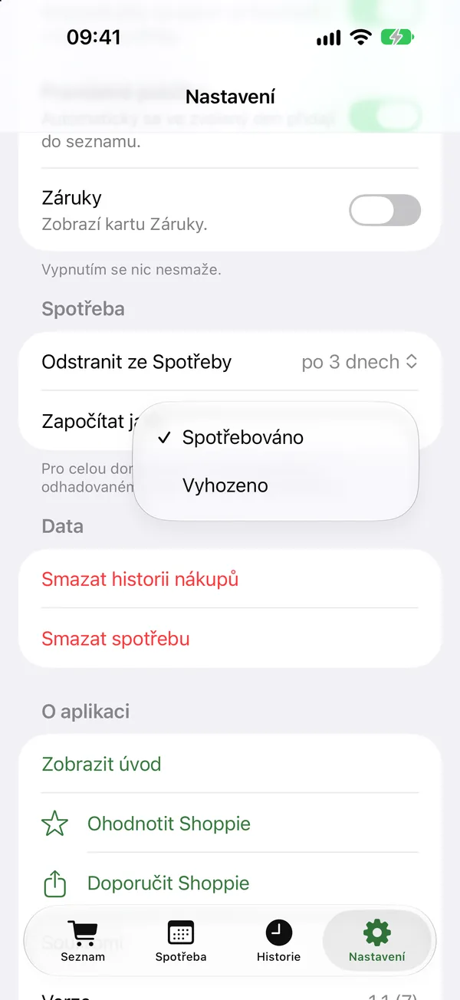

Jak zapnout automatické odstranění potravin po datu
-
Krok 1 Otevřete Odstranit ze Spotřeby
V kartě Nastavení v sekci Spotřeba klepněte na Odstranit ze Spotřeby a místo Nikdy vyberte, po kolika dnech (po 1, 2, 3 nebo 7 dnech).

-
Krok 2 Vyberte, jak se započítá
V řádku Započítat jako zvolte Spotřebováno, nebo Vyhozeno. Řádek se ukáže, až když vyberete počet dní.

Časté otázky
Platí nastavení i pro rodinu?
Ano. Automatické odstranění platí pro celou domácnost. Funguje i u odhadovaných dat.
Další otázky najdete na stránce Podpora.